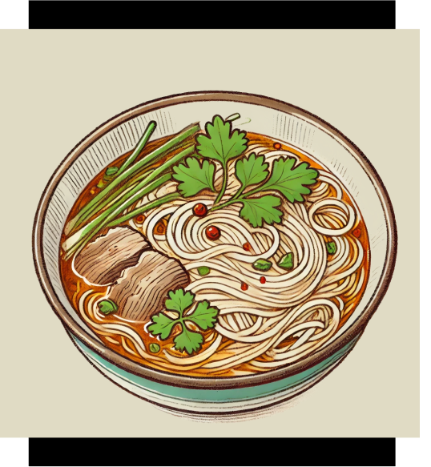

Ingredients:
Hand-pulled noodles: 200g
Lamb (or beef): 150g (thinly sliced), Clear broth or chicken stock 500ml, White radish 50g (thinly sliced), Fresh cilantro: to taste, Chopped green onions: to taste, Ginger: 2 slices, Dried chili pepper: 1 (optional), Sichuan peppercorns: a few, Salt: to taste, Soy sauce: to taste, Sesame oil: a few drops (optional)
Instructions:
- Prepare the Broth: In a pot, add the broth or chicken stock along with ginger, dried chili, and Sichuan peppercorns. Bring to a boil over medium heat, then lower to a simmer for about 10 minutes to infuse the flavors.
- Blanch the Lamb: Place the sliced lamb in boiling water briefly to remove any gamey taste, then set aside.
- Cook the Noodles: Boil the noodles in a separate pot of water until they’re about 70% cooked, then set them aside.
- Cook the Radish: Add the radish slices to the broth and cook until they soften. Season the broth with salt and soy sauce to taste.
- Add the Lamb and Noodles: Add the blanched lamb and partially cooked noodles to the broth. Continue cooking for 2-3 minutes to let the flavors meld.
- Serve: Ladle the huimian into a bowl, sprinkle with chopped green onions and fresh cilantro, and add a few drops of sesame oil for extra fragrance.
Tips:
- For a richer flavor, you can use lamb or chicken broth as the base.
- If you prefer a spicier dish, drizzle some chili oil over the top before serving.